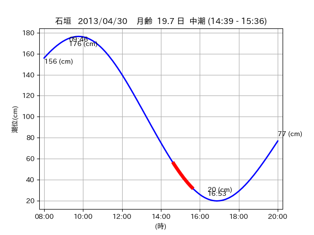

<!DOCTYPE html>
<html>
<head>
    
    <meta http-equiv="content-type" content="text/html; charset=UTF-8" />
    
        <script>
            L_NO_TOUCH = false;
            L_DISABLE_3D = false;
        </script>
    
    <style>html, body {width: 100%;height: 100%;margin: 0;padding: 0;}</style>
    <style>#map {position:absolute;top:0;bottom:0;right:0;left:0;}</style>
    <script src="https://cdn.jsdelivr.net/npm/leaflet@1.9.3/dist/leaflet.js"></script>
    <script src="https://code.jquery.com/jquery-3.7.1.min.js"></script>
    <script src="https://cdn.jsdelivr.net/npm/bootstrap@5.2.2/dist/js/bootstrap.bundle.min.js"></script>
    <script src="https://cdnjs.cloudflare.com/ajax/libs/Leaflet.awesome-markers/2.0.2/leaflet.awesome-markers.js"></script>
    <link rel="stylesheet" href="https://cdn.jsdelivr.net/npm/leaflet@1.9.3/dist/leaflet.css"/>
    <link rel="stylesheet" href="https://cdn.jsdelivr.net/npm/bootstrap@5.2.2/dist/css/bootstrap.min.css"/>
    <link rel="stylesheet" href="https://netdna.bootstrapcdn.com/bootstrap/3.0.0/css/bootstrap-glyphicons.css"/>
    <link rel="stylesheet" href="https://cdn.jsdelivr.net/npm/@fortawesome/fontawesome-free@6.2.0/css/all.min.css"/>
    <link rel="stylesheet" href="https://cdnjs.cloudflare.com/ajax/libs/Leaflet.awesome-markers/2.0.2/leaflet.awesome-markers.css"/>
    <link rel="stylesheet" href="https://cdn.jsdelivr.net/gh/python-visualization/folium/folium/templates/leaflet.awesome.rotate.min.css"/>
    
            <meta name="viewport" content="width=device-width,
                initial-scale=1.0, maximum-scale=1.0, user-scalable=no" />
            <style>
                #map_f84f3d60268ed02241d3d3d928bc9f1f {
                    position: relative;
                    width: 2048.0px;
                    height: 1600.0px;
                    left: 0.0%;
                    top: 0.0%;
                }
                .leaflet-container { font-size: 1rem; }
            </style>
        
</head>
<body>
    
    
            <div class="folium-map" id="map_f84f3d60268ed02241d3d3d928bc9f1f" ></div>
        
</body>
<script>
    
    
            var map_f84f3d60268ed02241d3d3d928bc9f1f = L.map(
                "map_f84f3d60268ed02241d3d3d928bc9f1f",
                {
                    center: [24.459, 123.843],
                    crs: L.CRS.EPSG3857,
                    ...{
  "zoom": 12,
  "zoomControl": true,
  "preferCanvas": false,
}

                }
            );

            

        
    
            var tile_layer_71334201f6c2b576e217c856d46a4b8d = L.tileLayer(
                "https://cyberjapandata.gsi.go.jp/xyz/seamlessphoto/{z}/{x}/{y}.jpg",
                {
  "minZoom": 0,
  "maxZoom": 18,
  "maxNativeZoom": 18,
  "noWrap": false,
  "attribution": "\u5730\u7406\u9662\u5730\u56f3",
  "subdomains": "abc",
  "detectRetina": false,
  "tms": false,
  "opacity": 1,
}

            );
        
    
            tile_layer_71334201f6c2b576e217c856d46a4b8d.addTo(map_f84f3d60268ed02241d3d3d928bc9f1f);
        
    
            var marker_0716a0d6988eb072940c725ff4909955 = L.marker(
                [24.474, 123.802],
                {
}
            ).addTo(map_f84f3d60268ed02241d3d3d928bc9f1f);
        
    
            var icon_8b107e5c3a030f273810116ee405fb5a = L.AwesomeMarkers.icon(
                {
  "markerColor": "orange",
  "iconColor": "white",
  "icon": "info-sign",
  "prefix": "glyphicon",
  "extraClasses": "fa-rotate-0",
}
            );
        
    
        var popup_c8436f6c0b19ffeb602d4622c0df6133 = L.popup({
  "maxWidth": "100%",
});

        
            
                var html_ed6b151602830635b65bab5517331189 = $(`<div id="html_ed6b151602830635b65bab5517331189" style="width: 100.0%; height: 100.0%;"><table><tr><td></td></tr><tr><td><center>20130430 No.1 </center></table></td></tr></table</div>`)[0];
                popup_c8436f6c0b19ffeb602d4622c0df6133.setContent(html_ed6b151602830635b65bab5517331189);
            
        

        marker_0716a0d6988eb072940c725ff4909955.bindPopup(popup_c8436f6c0b19ffeb602d4622c0df6133)
        ;

        
    
    
                marker_0716a0d6988eb072940c725ff4909955.setIcon(icon_8b107e5c3a030f273810116ee405fb5a);
            
    
            var poly_line_c504ace28d61258d790cd738de7cb625 = L.polyline(
                [[24.474, 123.802], [24.4813, 123.8029]],
                {"bubblingMouseEvents": true, "color": "#FF00FF", "dashArray": null, "dashOffset": null, "fill": false, "fillColor": "#FF00FF", "fillOpacity": 0.2, "fillRule": "evenodd", "lineCap": "round", "lineJoin": "round", "noClip": false, "opacity": 1.0, "smoothFactor": 1.0, "stroke": true, "weight": 3}
            ).addTo(map_f84f3d60268ed02241d3d3d928bc9f1f);
        
    
            var marker_796b4dbec72529e1fee288c2909d7808 = L.marker(
                [24.4786, 123.8021],
                {
}
            ).addTo(map_f84f3d60268ed02241d3d3d928bc9f1f);
        
    
            var icon_14b7d6ac0c839a701df1fec94df46f21 = L.AwesomeMarkers.icon(
                {
  "markerColor": "orange",
  "iconColor": "white",
  "icon": "info-sign",
  "prefix": "glyphicon",
  "extraClasses": "fa-rotate-0",
}
            );
        
    
        var popup_581234dd819da3b8fa920055cd0c76e6 = L.popup({
  "maxWidth": "100%",
});

        
            
                var html_6ba3d8546fa4673e88f7528a99241334 = $(`<div id="html_6ba3d8546fa4673e88f7528a99241334" style="width: 100.0%; height: 100.0%;"><table><tr><td></td></tr><tr><td><center>20130430 No.2 </center></table></td></tr></table</div>`)[0];
                popup_581234dd819da3b8fa920055cd0c76e6.setContent(html_6ba3d8546fa4673e88f7528a99241334);
            
        

        marker_796b4dbec72529e1fee288c2909d7808.bindPopup(popup_581234dd819da3b8fa920055cd0c76e6)
        ;

        
    
    
                marker_796b4dbec72529e1fee288c2909d7808.setIcon(icon_14b7d6ac0c839a701df1fec94df46f21);
            
    
            var poly_line_0fa6909b8b12ed26921eb0da6755f0ea = L.polyline(
                [[24.4786, 123.8021], [24.4835, 123.8089]],
                {"bubblingMouseEvents": true, "color": "#FF00FF", "dashArray": null, "dashOffset": null, "fill": false, "fillColor": "#FF00FF", "fillOpacity": 0.2, "fillRule": "evenodd", "lineCap": "round", "lineJoin": "round", "noClip": false, "opacity": 1.0, "smoothFactor": 1.0, "stroke": true, "weight": 3}
            ).addTo(map_f84f3d60268ed02241d3d3d928bc9f1f);
        
    
            var marker_a38c80e95790d764e92e52d5d8926040 = L.marker(
                [24.4637, 123.8415],
                {
}
            ).addTo(map_f84f3d60268ed02241d3d3d928bc9f1f);
        
    
            var icon_3d2071a2d6a9b8a592ac06f2cb73cc2f = L.AwesomeMarkers.icon(
                {
  "markerColor": "orange",
  "iconColor": "white",
  "icon": "info-sign",
  "prefix": "glyphicon",
  "extraClasses": "fa-rotate-0",
}
            );
        
    
        var popup_ff7af21ffff8fd6291e7f93e1468cc6d = L.popup({
  "maxWidth": "100%",
});

        
            
                var html_d02b050c457e9109ee9c5485f6f65ffb = $(`<div id="html_d02b050c457e9109ee9c5485f6f65ffb" style="width: 100.0%; height: 100.0%;"><table><tr><td></td></tr><tr><td><center>20130430 No.3 </center></table></td></tr></table</div>`)[0];
                popup_ff7af21ffff8fd6291e7f93e1468cc6d.setContent(html_d02b050c457e9109ee9c5485f6f65ffb);
            
        

        marker_a38c80e95790d764e92e52d5d8926040.bindPopup(popup_ff7af21ffff8fd6291e7f93e1468cc6d)
        ;

        
    
    
                marker_a38c80e95790d764e92e52d5d8926040.setIcon(icon_3d2071a2d6a9b8a592ac06f2cb73cc2f);
            
    
            var poly_line_bce1e62dfe9886c48fee21d21890b571 = L.polyline(
                [[24.4637, 123.8415], [24.4551, 123.8451]],
                {"bubblingMouseEvents": true, "color": "#00FFFF", "dashArray": null, "dashOffset": null, "fill": false, "fillColor": "#00FFFF", "fillOpacity": 0.2, "fillRule": "evenodd", "lineCap": "round", "lineJoin": "round", "noClip": false, "opacity": 1.0, "smoothFactor": 1.0, "stroke": true, "weight": 3}
            ).addTo(map_f84f3d60268ed02241d3d3d928bc9f1f);
        
</script>
</html>